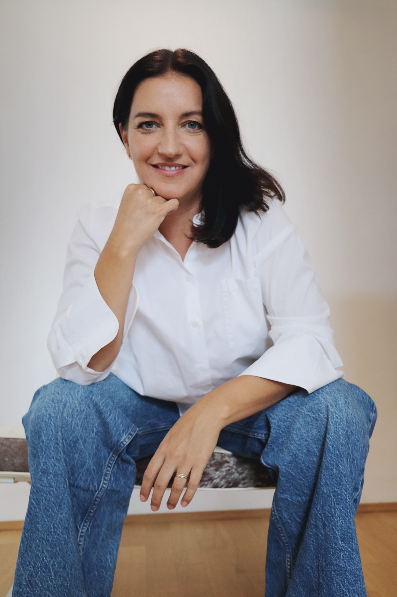
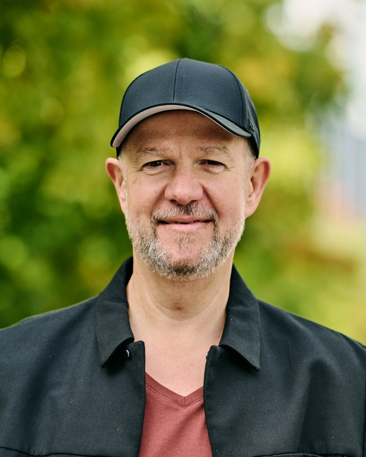

Ich glaube daran, dass Kommunikation erst dann gut ist, wenn sie
auf Unternehmensziele einzahlt. Deshalb entwickle
ich bei Parlo Communications Botschaften, die hängen bleiben, und
Strategien, die auch dann standhalten, wenn es schwierig wird.
Interne Kommunikation
die Unternehmen und Teams bewegt.
Externe Kommunikation
die Märkte und Stakeholder erreicht.
Positionierung
die auch in der Krise belastbar bleibt.
Zur Rolle von KI
KI ist heute Teil des Prozesses und gehört in jedes moderne Kommunikations-Setup. Wer aber glaubt, dass Kommunikation
künftig ausschließlich von Algorithmen übernommen wird, verwechselt
Kommunikation mit Content-Produktion. Vertrauen, Reputation, echte
Verbindung zu Zielgruppen und Stakeholdern sind keine
Automatisierungsaufgaben. Das sind Beziehungsaufgaben.
Mit Parlo Communications unterstütze ich in beiden Welten.
Mein Angebot
01
Viel Strategie, null Aktionismus.
Strategische Kommunikationsberatung
Eine Pressemitteilung ist keine Kommunikationsstrategie, und viele Einzelmaßnahmen ergeben noch keinen Plan. Bei Parlo Communications fange ich anders an: Kommunikation muss auf Unternehmensziele einzahlen, messbar sein, zur Zielgruppe passen und über alle Kanäle zusammenhängen. Von der Medienarbeit bis zur Krisenkommunikation. Alles andere ist einfach nur viel Lärm.
Welches Unternehmensziel soll bedient werden und was bedeutet dabei Erfolg? Das sind zentrale Fragen, die für mich am Anfang jeder Kommunikationsstrategie stehen. Daraus leite ich ab, wer die relevanten Zielgruppen sind und über welche Kanäle sie wirklich erreicht werden. Am Ende steht ein Fahrplan mit messbaren Maßnahmen, konsistenten Botschaften, klaren Prioritäten. So klar, dass der Plan auch in der Krise noch trägt.
02
Sichtbar werden, authentisch bleiben.
Personal Branding & Positionierung
Personal Branding funktioniert nicht, wenn man sich dafür verbiegen muss. Ich positioniere Führungspersönlichkeiten und Executives authentisch. Dazu gehören bei Bedarf auch Medientraining und Präsentationstraining, zugeschnitten aufs Format. Damit die Sichtbarkeit dem Unternehmen nützt und zur Person passt, die dahintersteht.
Ich helfe dabei, die authentischste und wirkungsvollste Außenwirkung einer Person zu finden und konsequent auszuspielen, auf LinkedIn und in Medien, auf Panels und in Interviews, auch intern vor den eigenen Mitarbeitenden. Nicht jeder Kanal passt zu jeder Person, deshalb achte ich bewusst darauf, wo und wie sich jemand wirklich authentisch zeigen kann. Damit keine Bühnenversion, sondern glaubwürdige Sichtbarkeit entsteht. Executive Positioning, das zum Menschen passt und auf Unternehmensziele einzahlt.
03
Aufbauen, übergeben, fertig.
Interim Communications Lead
Viele Unternehmen merken irgendwann, dass sie ein Kommunikationsproblem haben. Was ihnen meistens fehlt, sind Struktur, klare Prozesse und ein Team, das weiß, wie gute Kommunikation funktioniert. Ich baue genau das auf. Als Interim Communications Lead entwickle ich Kommunikationsabteilungen und -prozesse von Grund auf und so, dass sie langfristig tragbar sind. Und dann gehe ich wieder, weil gute Beratung keine Abhängigkeit schafft.
Was ich erreichen will: Strukturen, die nachhaltig tragen, von interner und externer Kommunikation über Krisenkommunikationsprozesse bis zum technischen Setup. Am Anfang steht daher immer eine genaue Analyse, was ein Unternehmen überhaupt braucht, um mit Blick auf die eigene Zielsetzung weiterzukommen. Die Befähigung des Teams und die geordnete Übergabe sind dabei von Anfang an Teil des Interims-Auftrags, so dass künftige Kommunikationsaufgaben selbständig gemeistert werden können.

Eva Rössler
Kommunikationsberaterin & Inhaberin
Das bin ich
Eva Rössler.
15 Jahre Brand und Corporate Communications, davon über zehn in
Führung. Journalistisch ausgebildet, strategisch geprägt, direkt im
Auftreten. Immer mit der Überzeugung, dass Kommunikation erst dann
gut ist, wenn sie wirklich etwas verändert.
Journalistische Ausbildung15 Jahre Brand- und Corporate CommunicationsUnternehmenssprecherin10+ Jahre in FührungB2B & B2CCorporate & Startup
Stationen
Als Unternehmenssprecherin habe ich für eine der bekanntesten B2B-Klimaschutzberatungen Deutschlands gearbeitet und für den größten Fast-Food-Konzern der Welt. Ich habe Abteilungen und Prozesse aufgebaut, Interviews gegeben und komplexe Themen verständlich gemacht.
So habe ich bei McDonald’s Deutschland die gesamte interne und externe Kommunikation verantwortet und Kampagnen entwickelt, die nachweislich positiv auf das Image und die Reputation des Unternehmens eingezahlt haben. Bei ClimatePartner habe ich die Kommunikationsabteilung von Grund auf aufgebaut und das Unternehmen aus einer akuten Kommunikationskrise herausgeführt: mit einem konkreten Plan, hands-on und mit klarer Positionierung in der Presse. Bei ProSiebenSat.1 habe ich die komplette Klaviatur der Corporate Communications gelernt, von interner und externer Kommunikation über PR bis zur Finanzkommunikation.
Haltung
Diese unterschiedlichen Stationen haben mir gezeigt: Gute Kommunikation fängt nicht mit dem Kanal an. Sie fängt damit an zu verstehen, wer die Zielgruppen sind und was sie wirklich bewegt. Kommunikation muss auf Augenhöhe stattfinden, auch wenn das manchmal bedeutet, unbequeme Wahrheiten anzusprechen. Nur dann entsteht echte Verbindung und Kommunikation kann wirken.
Warum Parlo
Parlo Communications habe ich gegründet, weil ich direkt arbeiten wollte, ohne den Overhead einer großen Agentur. Im Austausch mit Unternehmen und Menschen, die etwas zu sagen haben und denen ich helfen kann, ihre Botschaft so zu formulieren, dass sie ankommt.
Netzwerk
Die richtige Expertise an passender Stelle.
Ich arbeite am liebsten direkt, meistens auch allein. Wenn eine
Aufgabe mehr braucht, hole ich die richtigen Menschen dazu.
Marita Schöps
Transformations- und Changeberaterin
Bei manchen Herausforderungen reicht Kommunikation allein nicht aus. Wenn Organisationsstrukturen ins Wanken geraten oder ein Unternehmen mitten im Change steckt, bringt Marita ihre Superpower ein. Sie erkennt sofort Muster und Stolpersteine in Strukturen und Prozessen und legt den Finger charmant genau dahin, wo es wehtut. Sie bringt dafür immer die passende Lösung mit und den Ehrgeiz, Veränderungen so zu gestalten, dass sie im Unternehmen wirklich mitgetragen werden. Dafür wurde sie 2026 auch als eine der Top-Consultants ausgezeichnet.

Michael Kurz
Eventmanager
Michael ist meine Geheimwaffe, wenn eine Kommunikationsstrategie auch auf der Bühne stattfinden soll, vom großen Corporate Event bis zur kleinen Pressekonferenz. Er kennt die passenden Gewerke wie Catering oder Technik und lässt nicht locker, bis jedes Detail sitzt. Dabei behält er den Gesamtüberblick und bringt Ruhe in jede Organisation. Als erfahrener Eventmanager setzt er jedes Unternehmen passend in Szene.
Kontakt
Reden wir.
Für den ersten Schritt brauchen wir kein ausformuliertes Briefing,
kein Pitch-Deck, keine perfekte Problemdefinition.
Ganz egal ob eine Kommunikationsstrategie oder akute Hilfe bei der
Krisenkommunikation benötigt wird, ob es um Ihre persönliche
Sichtbarkeit oder die Positionierung des Unternehmens geht.
Ich freue mich mehr über die kommunikative Herausforderung zu hören.